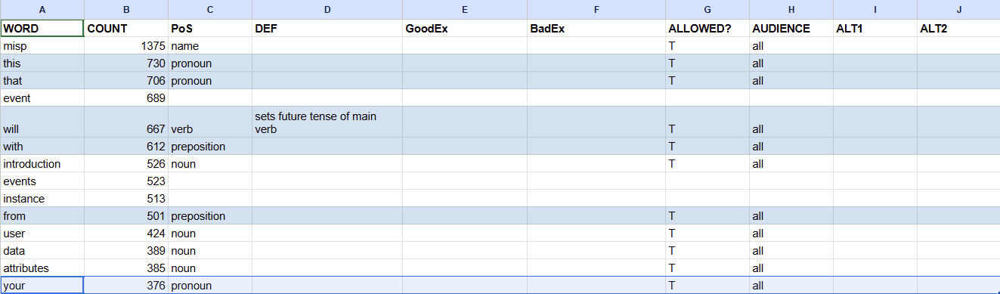
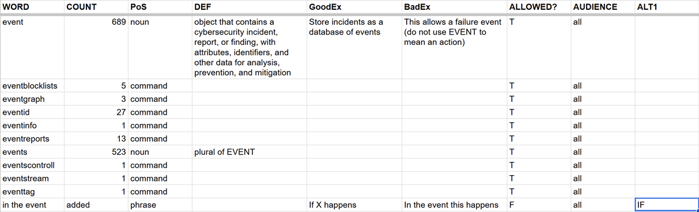
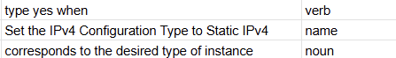
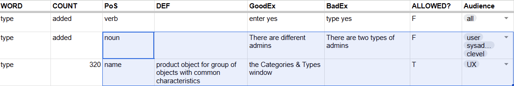

Table of Contents
List of Tables
A Controlled Language (CL) is set of rules for grammar, sentence length, and vocabulary. The rules define a subset of the natural language as allowed. Specifically in technical writing, many CLs limit the verbs you can use. This enforces consistency for all your documentation and conforms to or builds an industry standard for your products.
In general terms, a taxonomy is a structured CL, with parents and children. For example, in biology the taxonomy is: kingdom, phylum, class, order, family, genus, species. In Artificial Intelligence (AI), the taxonomy may be: AI, Machine Learning, Human Crowd-Sourced, Neural Networks, Deep Learning.
In technical writing, the taxonomy is usually for different audiences of a product: system administrator, basic end-user, advanced end-user, superuser, C-level decision maker. There will be a default CL, with all the rules that apply to all audiences, and a dictionary for each personna. For example, a taxonomy for a decision maker will be used mainly by Marketing and will allow the word leverage with the meaning "to use a foundation feature to reach the solution for which the product exists". For all other audiences, the word leverage is not allowed, and its alternative is use.
A Taxonomy Manager for a company that creates a shopping app for SmartPhones will be in charge of labeling strategies for search results. A Taxonomy Manager for a cyber security company will create a CL for different audiences and acquire a tool to enforce it. With this ambiguity, we will make our first rule: taxonomy is not allowed in this documentation, and its alternative is CL(the full vocabulary and rules) or dictionary (a subset of the CL for a specific audience).
Adopting and enforcing a CL is the solution to many technical writing issues.
If your organization has a team of writers, the CL enforces consistency of the content among the writers. If you have one writer, the CL enforces consistency over time among the documents.
If you translate your content, the reduced vocabulary and grammar and the re-use of matching content, makes translation significantly cheaper and often of better quality.
If you have a global market but do not have the budget for localization, the CL makes it easier for non-native speakers to read and use your documentation correctly. If your documentation is online, built-in machine translation (such as Google Translate) will give better results.
If the technical writers in your organization internalize your CL and re-use strategy, their productivity will increase.
Reduce your content by at least 30% without loss of information. Concise documentation makes it easier for users to find what is relevant to them at the time, makes clear to reviewers and stake-holders what is not relevant or incorrect, and makes the documented steps easier to follow.
This is a personal project of Rochelle Fisher, July 2025. The goal is to make a sample of technical writing and a sample of a proprietary CL for cybersecurity.
If you use part, parts, or all of this project for personal use, for profit, or for an organization (non-profit or for-profit), you must include a reference to this project or its documentation.
Reference Example:
Rochelle Fisher, Sample Cyber Security CL, version 1.0, July 2025.
----
Copyright© 2025 Rochelle Fisher. All Rights Resrved. Original work for private use.
These are the general overview steps:
Collect samples.
You will create a CL from your documentation. This project creates a CL for cybersecurity from online, GPL or unlicensed content.
Aggregate samples to one text file.
Run the Python script on the text file, to get a CSV file of each word and its number of instances used.
From the Python output, create the dictionary file.
For each word, starting with the least used, decide its part of speech, allowed or not allowed, audience, and examples.
Create grammar and content rules.
This project will start with ASD-STE 100 rules and then customize them.
Select an AI tool to test content for CL conformance, or create a Python script to test similar.
This is the cloudiest part for a sample project because we do not want to infringe on copyright laws. We will not use the content as-is, available for consumer use. We will use it only to get the vocabulary for our CL. When you create your CL, use your organization's documentation.
Sources:
- Rubicon Communications LLC. (Apr 25, 2025) netgate© Security Gateway Manual: Amazon AWS. © Copyright 2025 Rubicon Communications LLC. https://docs.netgate.com/manuals/pfsense/en/latest/aws-vpn-appliance-security-gateway-manual.pdf
- OpenCTI. (2025) OpenCTI User Guide: Manual Creations. © 2025 Filigran. All rights reserved. https://docs.opencti.io/latest/usage/manual-creation/
- MISP. (2024) MISP User Guide: A Threat Sharing Platform. GPL and CC-BY-SA 4.0 international.
To create the dictionary, we start with the unique words used and how many times each word is used in our sample. This Python script will give us an aggregated file, formatted for easy import to a spreadsheet.
Procedure 1. To create and run the python script word_counter.py:
- Save your aggregated sample as
sampleAgg.txt. - Copy this script in a text editor.
- In the same folder as
sampleAgg.txt, save the file asword_counter.py. - Run the python script: python word_counter.py > dictionary.csv
import re
import string
import sys
from collections import Counter
def analyze_document_frequency(filepath="sampleAgg.txt"):
try:
with open(filepath, 'r', encoding='utf-8') as document_file:
text_string = document_file.read().lower()
except FileNotFoundError:
print(f"Error: The file '{filepath}' was not found.", file=sys.stderr)
return
except Exception as e:
print(f"An error occurred while reading the file: {e}", file=sys.stderr)
return
match_pattern = re.findall(r'\b[a-z]{4,15}\b', text_string)
word_counts = Counter(match_pattern)
sorted_words = sorted(word_counts.items(), key=lambda item: (-item[1], item[0]))
print("Word Frequencies:")
print("-----------------")
for word, count in sorted_words:
print(f"{word} | {count}")
if __name__ == "__main__":
analyze_document_frequency()
Note on Code Source
This code started with the python script in Alchemy of Tomes [Fisher (2020)], which does not work in the latest Python versions. We used Gemini (Google AI) to update this script.
With three small samples of cybersecurity documentation from different organizations, the Python script gave us 4755 unique words. Your sample will be much larger. Your goal is to create a cybersecurity dictionary of approximately 1,000 words. This does not include product names or company-specific words.
Prerequisites: Run the Python script.
Effort: Use the output file from the Python script to create the dictionary file. This will require approximately ten minutes.
Procedure 2. To create the dictionary file:
- Import the output file to a spreadsheet.
We will use Google Sheets. You can use Microsoft Excel or similar.
Our Python script uses a pipe ( | ) as a delimiter between the word and its frequency of use. When you import the file, set the pipe as the delimiter.
- Set the column headers.
If you know that you will use a specific AI-driven tool, such as writer.com or jasper.ai, change the dictionary headers and values to work with the aquired tool.
If you do not have a checker tool yet, change row 1 to be these headers:
Word, Count, Part of Speech, Definition, Good Example, Bad Example, Allowed?, Audience, Alt1, Alt2. - If there are rows between the header row and the first word, delete them.
- In a separate tab, enter your audience personas in one column. Make sure
allis in this list. - In the main tab, Audience column, set data validation to select the persona from the list.
The script sorted the output by highest frequency to lowest. Start with the words most used. These will be the easiest.
Table of Contents
The first words that you set up in your dictionary will be the easiest and will have the most impact.
Prerequisites: Have the dictionary file in a spreadsheet.
Effort: This will require less than an hour.
Procedure 3. To work through the most used words in your dictionary:
- In the word with the highest count, set the Part of Speech (PoS).
A typical result for the most used words are the names of your organization or product. ASD-STE calls these technical names. Set the PoS of the technial names in the top results as
Name.This lets you filter for proper nouns which change more often than regular nouns. For example, the company name will change if your organization delivers a white label product.
Enter the PoS for the other most common words, such as the that this from. When you get to a word that is may be used in multiple parts of speech and is not a common word for all English content, skip it.
- In the Allowed column, enter
T(for true) orF(for false).Most of these first words will be allowed.
- In the Audience column, enter
allor select a persona from the list, if you are sure this word will be allowed only for this persona.
In our example, one of the product or company names is the word with the highest frequency. We set its PoS as
Nameand set Allowed toT. We set Audience toall. We do not set a value for the other columns yet.
In the top words, we have many that are clearly to be allowed: this that will with from your. These are pronouns, prepositions, and modular verbs. In a technical writing dictionary for native speakers, it does not give a lot of information to define the PoS. Is that a pronoun, adverb, conjunction, or determiner? We set a rule that we do not use minimalist rules. If that helps make a sentence easier to understand, we use it.
We have words that are industry standard for software technical writing: introduction user data attributes attribute example organisation. Later, we will enter a specific deinition for these words. For now, we set the PoS, set Allowed to
T, and set Audience toall.Note
attribute and attributes are two items. We restrict the values of the Word and ALT columns to one word or phrase, to prepare for a checker tool that might be a simple Python script.If you know that you will use a specific AI-driven tool, such as writer.com or jasper.ai, change the dictionary headers and values to work with the aquired tool.
See organisation. We know we need this word, but this spelling is British. We know our rules will tell us to use American spelling. In this case, we will make a decision for our dictionary without analysis, or to put it more accurately, despite analysis. The spelling of organisation is the most commonly used form, but we will not use it. We will use the American spelling.
Sort the complete range of dictionary alphabetically, by Word.
Set organization and organizations as allowed (
Tin Allowed).Set the British organisation and organisations as not allowed (
Fin Allowed).In the allowed words, set the definition:
nonspecific body of people with a purpose.We will use organisation for a company, nonprofit org, military base, and all similar bodies.
In ALT1 for organisation and organisations, enter organization and organizations.

Note
Why not add organizational on the fly? Answer: It is used only one time. We will analyze the text and find a more common rewrite in that one sentence. Or maybe that one instance is for Organizational Unit (OU) in Active Directory. If so, we will make that phrase a "word".
Sort the range by Count. We are done with the easiest words. Next: analyze words in their syntax and by content to make decisions for the dictionary.
Table of Contents
You will analyze how your dictionary words are used in your aggregated sample. We will begin with the top words. Then we will go through the words that are used one time only.
Procedure 4. To analyze words:
- Open your aggregated document that you used as input for the Python script.
- Search for the word to analyze. We like to use Notepad++, to get all the results in a list, each result with context.
- From the context, see if the word is used in more than one part of speech. If it is, and it is not obvious which is the most common, count the instances of each PoS.
Note
I usually paste or import the results in a spreadsheet and then use COUNTIF, filter, or pivot table. - See if the word, in the allowed PoS, is used with more than one defintion. If it is, note the defitions.
Note
Use counts, industry standards, and internet searches to get the best defintion. Get the ASD-STE 100 document and see what their dictionary says about the word. NGRAM is also a good tool.
- See if the draft definition works in a large random sample, or in all uses. If you decide to make the word not allowed, see if the chosen alternate word or syntax works.
- Update the rules, definition, PoS. Enter good and bad examples.
- If not allowed, make sure the words you set as alternatives are allowed and configured in the dictionary for PoS and definition, with examples.
Let's start with organizational.
Procedure 5. To set organizational as a word in our CL:
- Open the file with all your textual content. We named this file
sampleAgg.txt. - Search for organizational.
We found this:
Produce intelligence that will be embedded into organizational workflows and would serve decision-makers.[1]
- Analyzing the use of organizational, we see ambiguity. Does the author mean that the workflows are organized? That they are for the organization? That there are
different workflows for different groups in the hierarchy?
If we remove the word, it does not change the meaning, as far as we can see. We decide that this word is not allowed. If we had access to the SME, we would discuss their meaning and find alternatives.
Suggestion: You have access to your SMEs. Set your CL words as best as you can. Then, discuss multiple words with similar issues. Edit your CL for alternative words and other decisions.
Our next task is to work through the top words that are not obviously allowed or not allowed. Sort the dictionary by Count.
Our first word to work through is event.
Procedure 6. Analyzing event:
- In Notepad++, we search for event in the aggregated text. We get 1417 results, for event and events. As we read the results,
we make the defintion draft:
a security incident detected on the secured network
- The fifth result is for a procedure to create an event in the security application. We fix our defintion from more samples to include threat intelligence data and usage:
object that contains a cybersecurity incident, report, or finding, with attributes, identifiers, and other data for analysis, prevention, and mitigation
- We see that event is used with other definitions.
- A system or user action
This is a technical name for a specfic product. For our general cybersecurity dictionary, it does not fit. We can communicate actions in errors and logs with their names, without the use of event.
- A phrase: "in the event this happens"
This is a verbose phrase to mean if.
- CLI or API commands and pathnames. Our checker tool must ignore code, filenames, and pathnames.
Note
This is an advantage of an XML technical writing tool. We can use elements that set content by type: <code>, <codeblock>, <filename>, <pathname>, and similar. We can then set the checker tool to ignore text in these elements. We add a rule to our style guide to use these elements.
- A system or user action
- We sort the dictionary by Word, to configure all similar words (plural with singular, commands, and so on).
- In event, we enter the definition, good example, and bad example. In events, we enter:
plural of event.A non-AI checker tool (and even some AI tools) cannot see the difference of meanings in the use of event with our specific definition or the use of the non-allowed defintion. In Rule, we enter:
Do not use to mean action of a user or server. Our checker tool will show rules to help writers be consistent. - For the words that start with event and are obviously commands or pathnames,
we set the PoS to
commandand Allowed toT.
- In the dictionary, we add a row:
in the event.Word = in the event
Count = added
PoS = phrase
Good Example = If X happens
Bad Example = In the event this happens
Allowed = F
Audience = all
Alt1 = IF
- We must make sure that if is set to Allowed = T.
Search for if in the dictionary and set its values. If not in the dictionary, add it now.
Word = if
Count = added
PoS = conjuction
Definition = introduces condition
Allowed = T
Audience = all
Procedure 7. Analyzing type:
This word is an excellent example. It is used in different parts of speech with different definitions in writing and native speaking. To control our written language, we must restrict this word to one PoS and one definition. Or we can decide to set it to not allowed, to be replaced with specific words.
- Search for type in the aggregated text.
- Skim the hits with context. If it is not clear which PoS is mostly used, enter the PoS of each row. We found that it was most often used as a noun or technical name, but there were sentences with it used as a verb.

- Add a row for type as a verb and set it to not allowed.
Word = type
Count = added
PoS = verb
Good example = enter yes
Bad example = type yes
Allowed = F
Audience = all
ALT1 = ENTER
Rule = do not use as a verb
- Make sure enter is allowed.
Word = enter
PoS = verb
Definition = input values
Good example = enter yes
Bad example = type yes
Allowed = T
Audience = all
- We see that there many uses of type in the GUI and CLI. We could try to make it a technical name for user interface (UX) creators. The word type would be allowed in
microcopy and coding but not in technical writing.

But we see in the results that type is used in text that cannot easily be rewritten. We must allow it for everyone, but only with the required definition, as an object in the product.
Word = type
PoS = name
Definition = representation of group of objects with common characteristics
Allowed = T
Audience = All
Rule = only as product object - rewrite if meant general
- Make sure the style guide rule that all text on the interface (GUI, API, or CLI) must be wrapped in an element, such as <code>, <codeblock>, <guilable>. We can then set the checker tool to ignore text in these elements. If your checker tool shows the rules, it will not show this rule for interface labels, where it would cause user fatigue and be ignored when it is necessary.
- We look through the uses of type to mean a general group of people or things having common characteristics. We can rewrite those.
Table 1. Examples of Corrected Text for type
| Text | Corrected | Notes |
|---|---|---|
| supports various relationship types, and their usage depends on the entity types being linked | supports various relationships, and their usage requires linked entity types | This one sentence uses type with two definitions. The first can be removed. The second fits the allowed defition. |
| the type of storage used by Product can have an impact | the storage hardware and algorithm used by Product can have an impact | The full text discussed SSD devices and feed caching technology, so we're guessing that "type" meant hardware and configuration. For all the info we have, the correction could be: The storage you use can have an impact. |
| there are two types of admins: Org Admins and Site Admins | there are different admin levels: Org Admins and Site Admins | The use of type is not required. If the SME does not like level, we can change it to a different word (set, permissions). Also note that we removed two. It is always best to not enumerate features, to make sure you do not create a conflict in the text when a new feature is added. |
Procedure 8. Analyzing Ones and Twos:
When you are done with the top twenty or thirty words, resort your dictionary to look at the words used only one or two times. These words will be easy to set as not allowed or as commands or misspellings.
If the word is not allowed, set its values. Make sure the alternatives are allowed.
If the word is a command, in PoS, enter
command. Set it to Allowed =T. Make sure your style guide says to wrap commands in relevant elements.If the word is a mistake, in PoS, enter
misspelling. When your content is fixed for this mistake, you can remove it from the dictionary.If the word is correct and allowed, investigate. If it is a word from Marketing or UX, set it to allowed for that audience. If a product owner or sponsor wants it for everyone, discuss why.
For example, absent is used one time, in the phrase absent a route. This is a specific network configuration action. It is correct. We allow it for the user, sysadmin, and internal audiences. But we do not want it in the UX microcopy or C-level marketing.